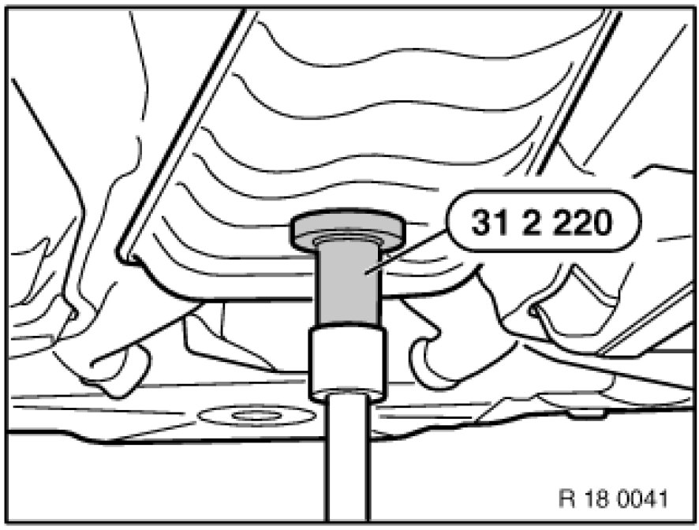
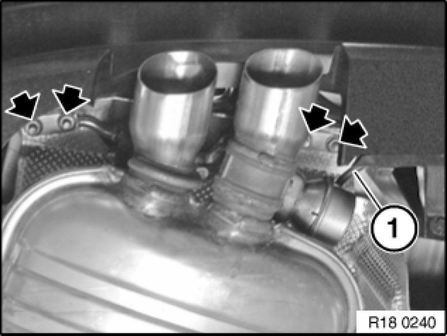
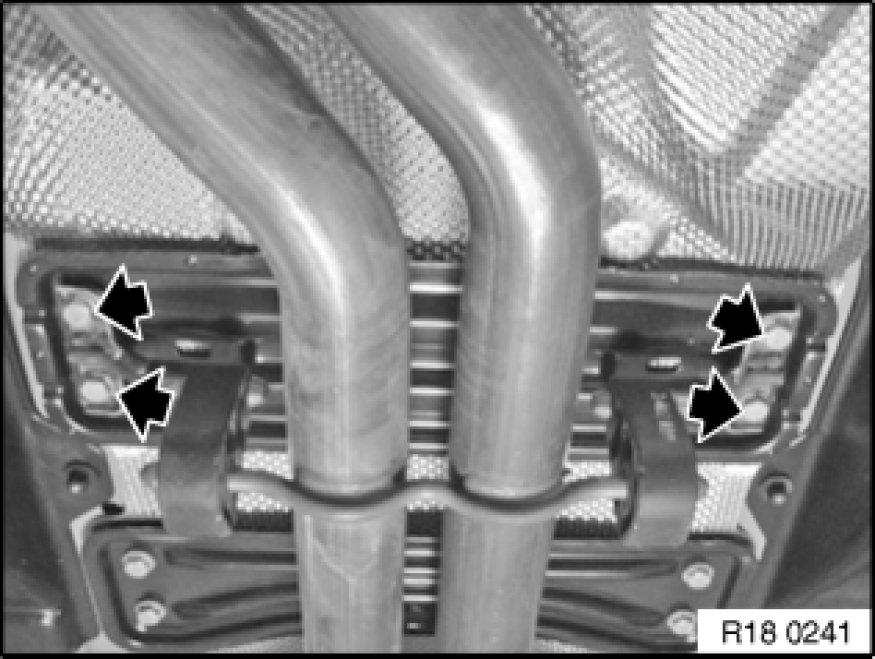
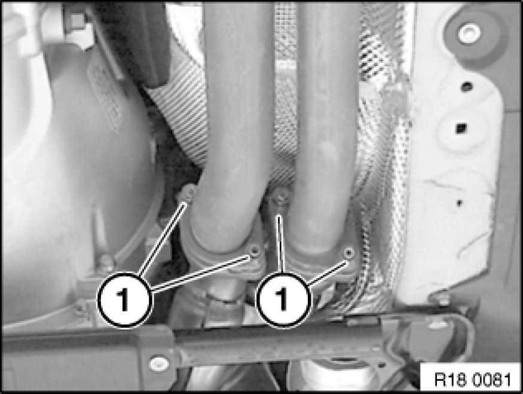

Exhaust System: Service and Repair
18 00 020 - Removing and installing complete exhaust system (M54/N52K)

Special tools required:
- 31 2 220 31 2 220 Support Plate

Warning!
Scalding hazard!
Only perform these tasks after exhaust system has cooled down.

Support exhaust system with jack and special tool 31 2 220 31 2 220 Support Plate and secure against falling out.

Important!
Removal of the exhaust system must be carried out with the assistance of a second person.

Pull off vacuum hose (1).
Unscrew nuts.

Release screws.

Release nuts (1) and remove complete exhaust system.
Installation Note:
Replace nuts.